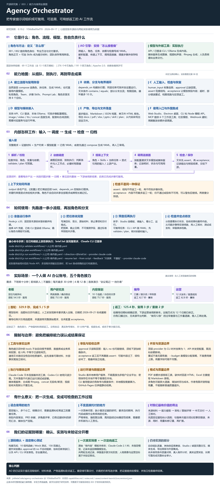

带着真实需求和证据
选定产品功能，提供需求、代码或接口资料、约束与交付格式；提前写清验收项，避免生成后再调整标准。
003 / 我们的完整理解
八个部分串起角色与模型的分工、内部流程、上手步骤、真实案例、限制和价值。图中标明了源码确认、实际运行与尚未验证的范围。

中文专家角色覆盖产品、工程、内容等领域
内置工作流模板含 13 个英文模板
主要使用入口网页 Studio · 桌面端 · 命令行
我们的判断
前两个库提供角色身份、专业方法和交付要求，AO 组织这些角色执行。角色背后可以调用同一模型或不同模型；加载的是所配置的角色版本。
| 关注点 | 当前已有 | 仍需把握 |
|---|---|---|
| 结果质量 | 结构检查、模型验收、自动返工。 | 标准完整性、事实准确性、约束保留与最终不合格时的阻断策略。 |
| 重复执行 | 续跑复用已完成步骤，只重做相关部分。 | 已有结果是否足够好，哪些步骤确实需要重新运行。 |
| 重复劳动与内容 | 可通过明确分工减少重叠。 | 尚未发现通用机制自动判断角色冗余、内容重复和新增角色的实际增益。 |
我们的真实案例中，五步完成且两处模型验收通过，仍出现出镜要求和日期错误。成功执行、验收通过、实际可用，必须分别判断。
下一步 / 待开展
选择我们实际需要推进的产品小功能，在相同模型和材料下比较单次生成、2—3 个角色的精简流程与更多角色的流程。已有内容案例不能替代产品效果验证。
选定产品功能，提供需求、代码或接口资料、约束与交付格式；提前写清验收项，避免生成后再调整标准。
记录事实错误、遗漏、重复内容、角色独立贡献、总耗时和人工修订量。增减角色后再次比较，判断额外步骤是否值得。
把产出放进真实产品过程验收；不能把写出文件等同于功能完成。多次试验有收益再沉淀模板，没有收益就精简流程。
目标是判断能否改善交付质量、减少人工总成本，并保留可追溯过程；不预设“角色越多，结果越好”。
02 / FROM INPUT TO DELIVERY
从原库选出四条典型工作流，沿着“输入 → 分工 → 交付”看它们的用途。
01 / 做产品
“帮自由职业者做一个自动记账、开票的小工具。”
把需求、方案和计划放在同一条流程中，适合从模糊想法开始。
查看上游原始模板 ↗按上游模板整理的交付范围，非本次运行产物。
02 / 做内容
“做一个给职场新人讲 AI 工具的短视频账号。”
每个环节接着上一步的材料工作，从定位一直推进到可执行的内容排期。
查看上游原始模板 ↗按上游模板整理的交付范围，非本次运行产物。
03 / 做开发准备
“做一个可以在本地使用的自动记账命令行工具。”
配合文件落盘功能写出项目文件，再交给编程工具继续实现和实际运行测试。
查看上游原始模板 ↗按上游模板整理的交付范围，非本次运行产物。
04 / 做短片
“末日废城里，一个机器人清道夫捡到一只会说话的鸵鸟。”
需要支持对应能力的图片、视频或语音服务；合成依赖本机 ffmpeg。这里展示流程，不是本次生成的成片。
查看上游原始模板 ↗按上游模板整理的交付范围，非本次运行产物。
03 / THE CAPABILITY MAP
角色库提供“谁来做”
编排引擎安排“怎么接着做”
一句话自动组队，或自己点选专家。常用阵容可保存，自建角色与方法论也能加入步骤。
按依赖传递结果，可并行的任务同时推进；用条件分支和有限循环处理不同路径。
需要信息时让人补充，关键节点收集确认。对不满意的某一步给反馈，带着旧稿继续修改。
让模型检查内容要求，用程序检查必需文本、篇幅或文件数量。保留验收与返工记录。
连接图片、视频和语音生成服务，用同一流程组织剧本、定妆图、分镜、配音与合成。
保留每一步的产物，导出文档、生成分享报告，也能写出项目文件或连接外部工作流程。
04 / YOUR WORKSPACE
网页 Studio 把角色、流程和运行产物放在同一处；也能从桌面端进入，或通过命令行接入自己的脚本。
模型可通过 API、已有 CLI 登录或本地 Ollama 接入；可用性和额度由对应服务决定。
上游版本与客户端下载 ↗阅读说明
本页先展示原库提供的能力与素材。模板卡片说明预期交付范围；官方截图、动图与运行记录保留各自来源，不作为本次运行验证。
多角色并不必然优于单次生成。CLI 接入默认串行；模型验收不通过可能仍继续流转；人工确认是否阻断下游取决于流程条件。代码写出后，仍要实际运行和测试。
本地已完成构建和 158 项核心测试，另完成“做内容”真实模型运行与带反馈续跑。实际案例中，验收通过后仍发现约束遗漏；这些记录不能代表所有场景的生成质量。
上游公开的质量评测 ↗研究快照：0.19.2 / 1f36dba95ef70，整理于 2026-09-17。角色数按中文依赖包 1.4.0 统计；69 个模板按固定版本文件统计。
截图与 GIF 原样复制自 jnMetaCode/agency-orchestrator，Copyright 2026 jnMetaCode，随库 Apache-2.0 许可。素材可能早于研究快照，界面以实际安装版本为准。
许可全文 · 上游说明与演示来源 ↗